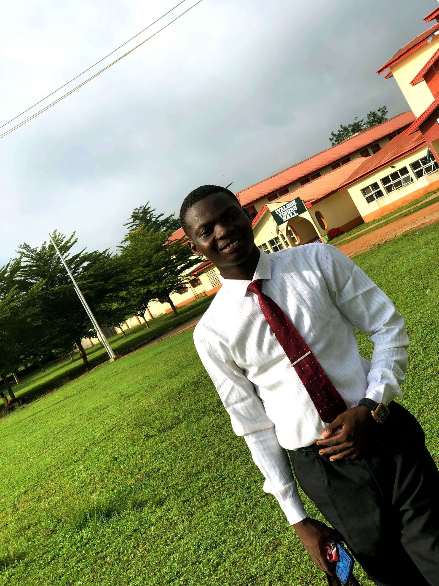

About Me
Slack Name: Lasisi Matthew Adeola (Pabby)
Slack Email: lasisiam.22@student.funaab.edu.ng
Goals
My goals for the next 2 years in the tech industry is as follows;
|1. Master Front-End Technologies
Goal: To Deepen my expertise in core front-end technologies such as HTML, CSS, and JavaScript.Details: I will Stay up-to-date with the latest trends and best practices. I will also learn advanced techniques in React, Angular, or Vue.js
2. Build Responsive and Accessible Websites
Goal: To create websites that are not only visually appealing but also accessible to everyone, including people with disabilities.Details: I will Implement best practices for responsive design and accessibility (WCAG standards). Ensuring all websites function well across different devices and screen sizes.
3. Mentor and Teach Others
Goal: to Share my knowledge and experience to help others grow.Details: I will Mentor junior developers, write technical blogs, or create tutorials and courses. I will also Participate in coding bootcamps, workshops, and hackathons as a mentor or instructor.
4. Continuous Learning and Professional Development
Goal: To Keep learning and improving my skills continuously.Details: I will Stay current with emerging technologies and industry trends. I will also Obtain relevant certifications, attend conferences, webinars, and join professional organizations. I will Set aside time regularly for self-study and experimentation with new tools and technologies.
Current Time (UTC):
Current Day: